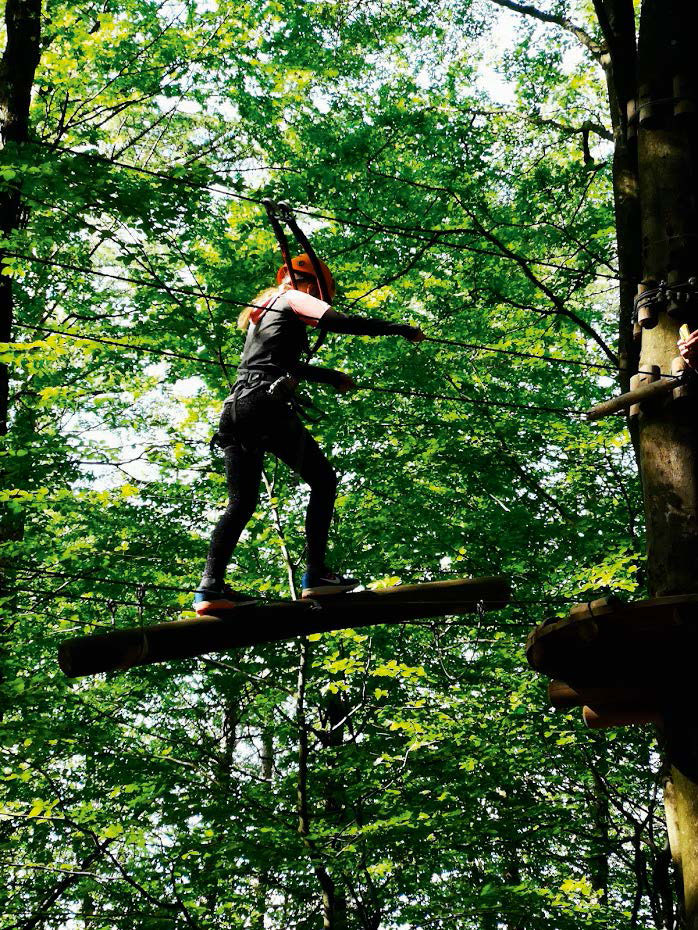
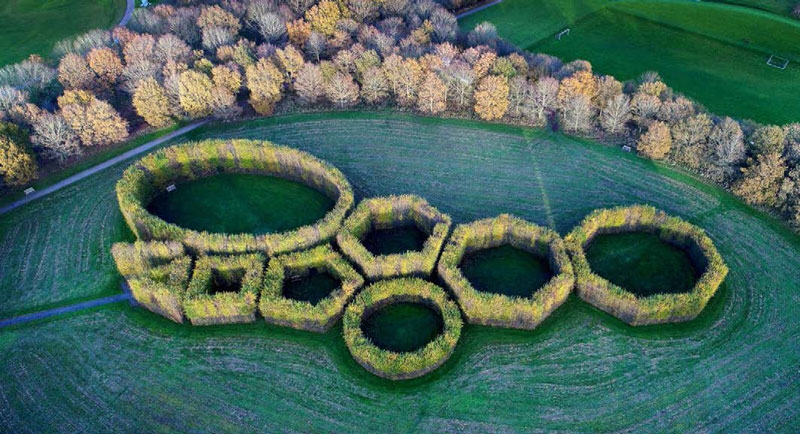

Matematik FP9
Prøven med hjælpemidler
Til dette opgavesæt hører en billedfil til opgave 3, et svarark til opgave 3 og en regnearksfil til opgave 4.
Onsdag den 2. december 2020
kl. 10.00-13.00
Ved prøven må der anvendes alle de fagspecifikke hjælpemidler, som har været anvendt i den daglige undervisning. Fagspecifikke hjælpemidler, som ikke kan medbringes eller opbevares lokalt, kan efter skolelederens nærmere anvisninger tilgås via internettet.
Vejledning
Kære elev
Prøven består af 7 opgaver. Du har 3 timer til at løse dem.
Ved hver opgave står der, hvor mange point den højst kan give. Prøven kan i alt højst give 67 point. Du bestemmer selv, hvilken rækkefølge du laver opgaverne i, og hvor lang tid du vil bruge på hver af dem.
Det er vigtigt, at du begrunder dine svar i alle opgaver.
Det betyder, at du i hver opgave skal vise eller forklare, hvordan du er nået frem til dit svar. Du kan fx begrunde dit svar med tekst, beregninger og/eller tegninger.
En del af de point, du kan få i hver opgave, kommer fra dine begrundelser. I de fleste opgaver kan du ikke få det højeste antal point, hvis du ikke begrunder dit svar, selv om dine resultater er rigtige.
I nogle af opgaverne skal du beregne et antal eller en størrelse. I andre opgaver skal du vise, hvordan du finder frem til et bestemt resultat eller afgøre, om en påstand er sand eller falsk.
Der er også opgaver, hvor du skal løse et matematisk problem ved at undersøge. I disse opgaver forventer vi ikke, at du på forhånd kender en metode, du kan bruge til at løse problemet. Ordet ’undersøg’ signalerer, at du selv skal finde på en god måde at løse problemet på ved at bruge matematik, du kender.
God arbejdslyst.
Styrelsen for Undervisning og Kvalitet
1
Billetter til en klatrepark
Opgave 1 giver højst 11 point|
En ungdomsklub planlægger en tur til en klatrepark.
Enkeltbilletter til klatreparken koster 274 kr. pr. barn, dvs. personer under 18 år, og 319 kr. pr. voksen. |
|
| 1.1 |
Hvor stor er prisforskellen på en enkeltbillet til en voksen og en enkeltbillet til et barn?
|
| 1.2 |
Hvad koster enkeltbilletter til 20 børn og 2 voksne i alt?
|
| 1.3 |
Forklar, hvorfor man kan bruge udtrykket 274n + 638 til at beregne, hvad enkeltbilletter til n børn og 2 voksne koster i alt.
|

Foto: Opgavekommissionen i matematik
Foto: Opgavekommissionen i matematik
Klatreparken sælger også gruppebilletter, der gælder til både børn og voksne. Tabellen herunder viser, hvad disse billetter koster. Ungdomsklubben planlægger, at der skal 2 voksne med på turen, og at højst 40 børn kan komme med. |
|
| 1.4 |
Undersøg, hvor mange børn der skal med på turen, for at det er billigere at købe en gruppebillet end at købe enkeltbilletter.
|
2
Klatreparkens bod
Opgave 2 giver højst 6 point|
Ved klatreparken er der en bod, hvor man kan købe saftevand, kakao og chokolade.
En gruppe børn fra ungdomsklubben købte tilsammen for 90 kr. |
|
| 2.1 |
Du skal undersøge, hvor mange krus saftevand, krus kakao og stykker chokolade børnene kan have købt. Skriv alle de forskellige muligheder, der er, når børnene ikke nødvendigvis har købt alle tre slags varer.
|
3
De Geometriske Haver
Opgave 3 giver højst 8 point|
De Geometriske Haver i Herning består af hække, der er plantet, så de ligner geometriske figurer. Du kan se haverne på fotoet til højre. Nogle af hækkene har form som regulære polygoner. Disse hække har alle en udvendig sidelængde på 11 m. |

Foto: Opgavekommissionen i matematik
Foto: Opgavekommissionen i matematik
| 3.1 |
Hvor stor er den udvendige omkreds af hækken, der har form som en regulær sekskant?
Da hækkene blev plantet, skulle gartnerne kende vinkelstørrelserne i polygonerne. |
||||
| 3.2 |
Forklar, hvordan de kunne vide, at hver vinkel i den regulære syvkant skulle være ca. 129°.
For at kunne plante hækken, der har form som en cirkel, måtte gartnerne vide, hvor cirklens centrum skulle være. Centrum skulle have samme afstand til femkanten, sekskanten og syvkanten. Alberte og Bertil har vist med skitserne herunder, hvordan de tror, at gartnerne har fundet ud af, hvor cirklens centrum skulle være.
|
| 3.3 |
Undersøg, om Alberte, Bertil eller de begge kan have ret. Brug eventuelt filen HAVER_DEC_2020 eller svararket.
|
4
Ture med ungdomsklubben
Opgave 4 giver højst 12 point|
Alberte og Bertil går i en ungdomsklub med to afdelinger, en i Skovby og en i Mejlby. De har spurgt hvert medlem i de to afdelinger, hvor mange ture de har deltaget i på et år. I regnearksfilen TURE_DEC_2020 kan du se medlemmernes svar.
|
|
| 4.1 |
Hvor mange ture har medlemmerne i Mejlby i gennemsnit deltaget i på et år?
|
| 4.2 |
Tegn et søjlediagram, der viser fordelingen af de forskellige antal ture, medlemmerne i Skovby har deltaget i.
|
| 4.3 |
Beskriv ligheder og forskelle mellem fordelingen af de antal ture, medlemmerne i Mejlby har deltaget i, og fordelingen af de antal ture, medlemmerne i Skovby har deltaget i på et år.
Alberte og Bertil vil skrive en artikel til ungdomsklubbens blad om det antal ture, medlemmerne i Skovby og Mejlby samlet set har deltaget i. De overvejer disse tre overskrifter:
|
| 4.4 |
Forklar, hvilken eller hvilke af de 3 overskrifter der passer til det, data fra undersøgelsen viser.
|
5
Rubjerg Knude Fyr
Opgave 5 giver højst 9 point|
Rubjerg Knude Fyr ved Vesterhavet blev bygget i 1900. Dengang stod fyret ca. 200 m fra en skrænt. På grund af nedslidning af jordoverfladen bliver afstanden mellem fyret og skrænten hele tiden mindre. I oktober 2019 stod fyret ca. 7 m fra skrænten.
|
|
| 5.1 |
Du skal vise med beregning, at fyrets afstand til skrænten i gennemsnit blev ca. 1,62 m kortere pr. år i perioden fra år 1900 til 2019.
|
Tegning Hans Ole Herbst.
Tegning Hans Ole Herbst.
|
Funktionen f (x) = 200 – 1,62x er en matematisk model, som beskriver sammenhængen mellem antal år efter 1900, x, og fyrets afstand til skrænten, f(x).
|
|
| 5.2 |
Forklar, hvordan du kan se på forskriften, at grafen for f er en ret linje.
|
|
D. 22. oktober 2019 blev fyret flyttet 70 m, så det kom til at stå 77 m fra skrænten.
Nogle forskere mener, at ændringer i klimaet kan betyde, at nedslidningen af jordoverfladen sker lidt hurtigere år for år. |
Tegning Hans Ole Herbst.
| 5.3 |
Undersøg, hvornår fyret bør flyttes igen, hvis det stykke, der bliver slidt væk, bliver 2 % større, for hvert år der går fra 2019. Antag, at det stykke, der blev slidt væk i 2019, var 1,62 m.
|
6
Figurfølge
Opgave 6 giver højst 13 point
Herunder er figur 1, figur 2 og figur 3 i en figurfølge. Linjestykket til venstre har længden 1, og det grå kvadrat har arealet 1.
|
|||||||
| 6.1 |
Tegn figur 4 i figurfølgen.
|
||||||
| 6.2 |
Hvor stor er omkredsen af figur 3?
|
||||||
| 6.3 |
Hvor stor er omkredsen af figur n?
Alberte, Bertil og Oliver har skrevet hver sin formel til at beregne arealet af figur n.
|
||||||
| 6.4 |
Vælg en af formlerne, og forklar, hvorfor man kan bruge den til at beregne arealet af figur n.
Oliver kan omskrive både Albertes og Bertils formel til A = n2 + n + 1 med et CAS-værktøj, men han kan ikke forklare, hvorfor det er sådan. |
||||||
| 6.5 |
Forklar, hvilke regneregler, der gør, at man kan omskrive både Albertes og Bertils formel til A = n2 + n + 1.
|
7
Figurer med arealet 50
Opgave 7 giver højst 8 point
I den blå boks står navnene på 7 typer figurer.
|
||
| 7.1 |
Undersøg, hvordan hver type figur kan se ud for at have arealet 50. Du kan begrunde dine resultater med beregninger eller tegninger. Husk at skrive, hvilken type figur hver af dine beregninger eller tegninger hører til.
|